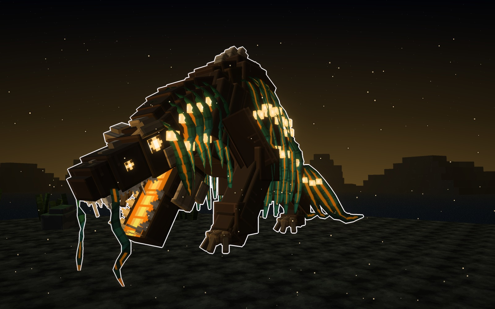
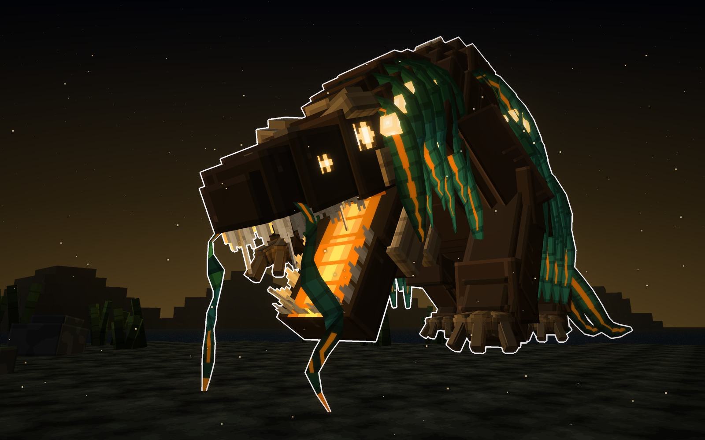
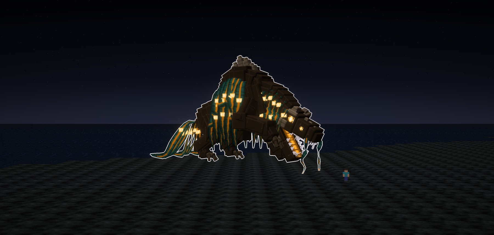
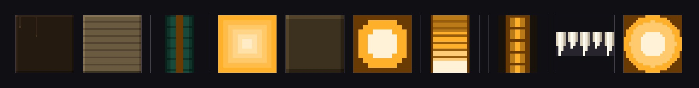

Salió del kelpie de las leyendas escocesas, el caballo de agua que arrastra a la gente al fondo del lago.
Del caballo solo le quedan rastros.
- La cabeza manda. Es ancha, alta y corta, con cuatro ojos encendidos y las fauces abiertas desde muy atrás.
- Las algas le crecen de la joroba. Le caen como una cortina por los dos lados, le tapan el cuello y le enmarcan la
cabeza. Tienen el nervio encendido y vejigas que brillan.
- Los rastros del kelpie son la crin de algas y las pezuñas, partidas en tres garras de cuerno.
Cómo es Kelpia
La cabeza
- Es ancha, alta y corta. Tiene dos cejas de hueso en pico, de mal genio, y unos nudos de hueso por el hocico y
la coronilla.
- Tiene cuatro ojos encendidos, dos por lado: uno grande arriba y uno pequeño en el hocico.
- Las fauces llevan el paladar encendido en escalones, los dientes en hoja, dos pares de colmillos arriba y uno
abajo, el suelo de la boca encendido y el núcleo al fondo.
- La quijada es honda, con dos alas de hueso a los lados. De las comisuras le cuelgan dos barbos de
alga, ondulados.
El cuerpo
- La joroba de los hombros lleva una cresta de hueso, y de ella salen las algas.
- Los brazos son largos, con un codo hacia fuera. Uno está apoyado y el otro alzado, con las garras colgando.
- Las patas de atrás son cortas y el lomo cae hacia la cola. Brazos y patas acaban en pezuñas partidas en tres
garras de cuerno.
- La cola es un muñón del que salen las algas, que se arrastran por el suelo.
- La piel es parda y mojada, con hilos de agua que le chorrean. Solo arden las fauces, los ojos, el
nervio de las algas y las vejigas.
la Acechadora · ámbar y alga verdeazul
De cuerpo entero y de cerca


Su forma
- Cuerpo
- cargado de hombros
- Joroba
- de hueso, con las algas
- Ojos
- cuatro
- Luz
- ámbar
Señas
- La que espera quieta en la orilla con la boca abierta.
- Mide 22 bloques de alto y 38 de largo.
piel
hueso
alga
luz
A escala
Kelpia con un jugador delante (1,8 bloques).

Los materiales
Las texturas a píxel grande, sin letras. De izquierda a derecha van: la piel con el agua que le chorrea, el
hueso en capas, la cinta de alga con su nervio, la vejiga, la garra de cuerno, el ojo, el paladar, el suelo de la boca, los
dientes y el núcleo.

Veredicto de Juan
14-10-2026. La primera ficha tenía tres caballos de agua: la Kelpia (encabritada), el Hipocampo (con cola de pez) y la
Acechadora (de pie, con la cabeza baja). Juan dijo: «el tipo C me gusta su diseño pero no en su anatomía, hubiera sido
mejor que no hubiera sido un caballo sino algo creado nuevo… está bien usar referencias pero no hacerlas iguales». La
Acechadora se rehízo con este cuerpo inventado y se quedó con su diseño. Juan la aprobó: «ahora sí me gustó, excelente
trabajo, este sí se acercó a lo que busco». Los dos caballos no se guardan.
Bocetos: materiales/generadores/kelpia_modelo.py (acechadora) y kelpia_escenas.py (y jefa_modelo.py, del que
toma los tubos de bloques).